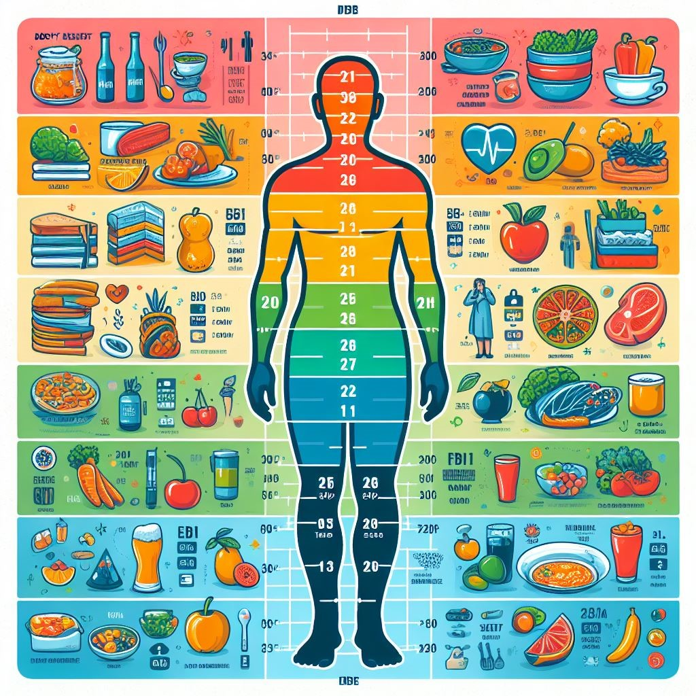

¿Qué es el IMC?
El IMC es una medida que relaciona el peso y la altura de una persona para evaluar si su peso es saludable.
Se utiliza como una herramienta de evaluación, pero no diagnostica la grasa corporal ni la salud de un individuo.
Interpretación del IMC:
Bajo peso: IMC por debajo de 18.5.
Peso saludable: IMC entre 18.5 y 24.9.
Sobrepeso: IMC entre 25.0 y 29.9.
Obesidad: IMC de 30.0 o más.
Calculadoras del IMC:
Puedes usar la Calculadora del IMC para adultos del CDC para adultos de 20 años o más.
También puedes encontrar calculadoras en otros sitios, como The Texas Heart Institute y IMSS.
Consideraciones adicionales:
El IMC no tiene en cuenta la composición corporal (grasa versus músculo).
En atletas o personas con mucho músculo, un IMC superior a 25 no necesariamente indica sobrepeso.
Siempre consulta con un profesional de la salud para una evaluación completa.